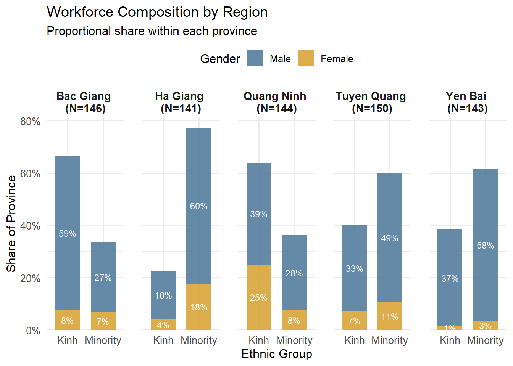
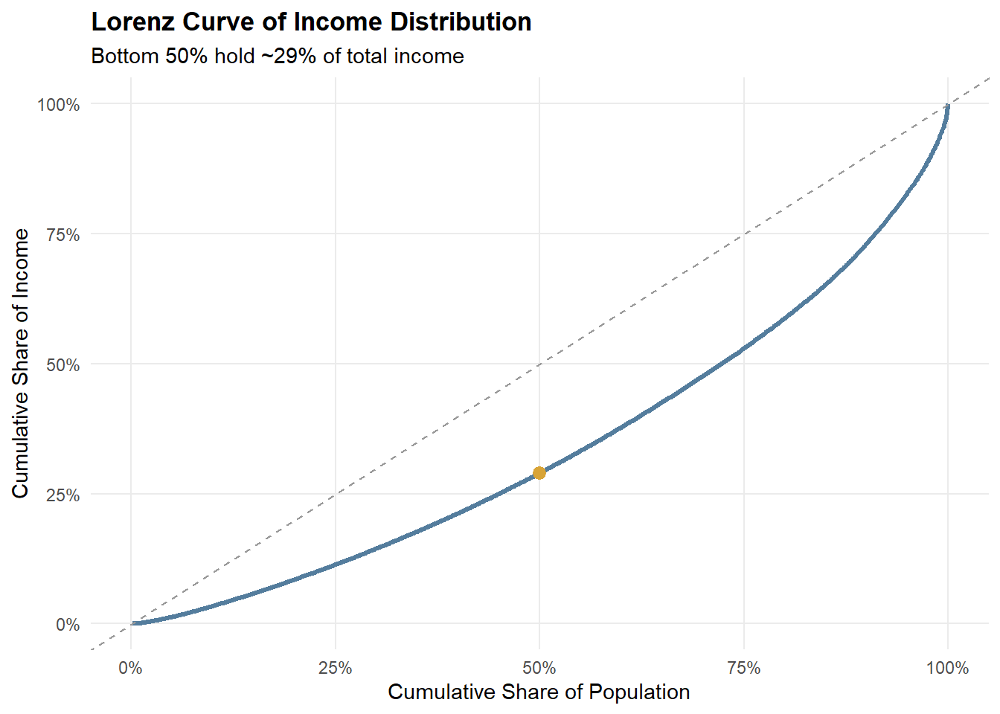

pacman::p_load(tidyverse, readxl, patchwork, ggthemes, scales, ggdist)Take-Home Exercise 01
Overview
This report analyzes income inequality among rural informal labourers in Northern Vietnam. Leveraging tidyverse for data wrangling and ggplot2 for visual analytics, we address key socio-economic questions through four progressive lenses:
Macro Context: Demographics and income distribution patterns.
Structural Gaps: The influence of ethnicity, gender, and livelihood diversity.
Micro Influencers: Returns on education, vocational training, and credit access.
Social Outlook: Linking policy priorities to rural development perceptions.
1 Getting Started
1.1 Installing and loading the packages
| Library | Description |
|---|---|
| tidyverse | A collection of core packages designed for data science, used extensively for data preparation and wrangling. |
| readxl | Allows R to read Excel files (.xlsx). |
| patchwork | For arranging multiple ggplot2 figures into a composite figure. |
| ggthemes | Provides extra themes, geoms, and scales for ggplot2. |
| scales | Supplies scale functions and tools for customizing axes, labels, and legends in ggplot2. |
| ggdist | An extension of ggplot2 for visualising distributions and uncertainty, useful for half-violin or raincloud plots. |
1.2 Data import
The dataset used in this study is derived from a socio-economic survey of 725 informal labourers across five provinces in the Northern Mountainous Region of Vietnam. The data consists of 725 observations and 30 variables, categorized into six key dimensions: Characteristics (C), Income Types (T), Impact Factors (F), Living Conditions (L), Policy Opinions (P), and Social Assessments (A).
raw_df <- read_excel("data/Upload for elsiver.xlsx",
sheet = 1,
na = c("", "NA"))1.3 Filtering data for selected variables
selected_df <- raw_df %>%
select(
CPRO, CGEN, CRAC, CJOB, CQUI,
TEIN, TAIN, TSII, TOIN,
FEDU, FVTP, FCRA, FTAP,
LWDA,
starts_with("PPO"),
ARO4,
starts_with("LHO")
)1.4 Data Preprocessing
1.4.1 Checking Duplicate Rows
Using the duplicated() function to see whether there are duplicate entries in the data.
raw_dup <- raw_df[duplicated(raw_df), ]
raw_dup# A tibble: 2 × 30
CPRO CGEN CRAC CJOB CQUI TEIN TAIN TSII TOIN FEDU FVTP FCRA FTAP
<dbl> <chr> <dbl> <dbl> <dbl> <dbl> <dbl> <dbl> <dbl> <dbl> <dbl> <dbl> <dbl>
1 3 1 2 1 4 26 26 0 0 0 1 1 1
2 5 1 1 1 5 18 7 11 0 0 1 1 1
# ℹ 17 more variables: LHO1 <dbl>, LHO2 <dbl>, LHO3 <dbl>, LHO4 <dbl>,
# LCRE <dbl>, LSAV <dbl>, LWDA <dbl>, PPO1 <dbl>, PPO2 <dbl>, PPO3 <dbl>,
# PPO4 <dbl>, PPO5 <dbl>, ARO1 <dbl>, ARO2 <dbl>, ARO3 <dbl>, ARO4 <chr>,
# ARO5 <dbl>sel_dup <- selected_df[duplicated(selected_df), ]
sel_dup# A tibble: 5 × 24
CPRO CGEN CRAC CJOB CQUI TEIN TAIN TSII TOIN FEDU FVTP FCRA FTAP
<dbl> <chr> <dbl> <dbl> <dbl> <dbl> <dbl> <dbl> <dbl> <dbl> <dbl> <dbl> <dbl>
1 3 1 2 1 5 24 24 0 0 0 1 1 1
2 3 1 2 1 5 22 22 0 0 0 1 1 1
3 3 1 2 1 5 22 22 0 0 0 1 1 1
4 3 1 2 1 4 26 26 0 0 0 1 1 1
5 5 1 1 1 5 18 7 11 0 0 1 1 1
# ℹ 11 more variables: LWDA <dbl>, PPO1 <dbl>, PPO2 <dbl>, PPO3 <dbl>,
# PPO4 <dbl>, PPO5 <dbl>, ARO4 <chr>, LHO1 <dbl>, LHO2 <dbl>, LHO3 <dbl>,
# LHO4 <dbl>
Note
Interpretation of duplicates
We checked duplicates at two levels:
raw_df: duplicates here indicate exactly repeated records across all variables (data-entry duplication).selected_df: duplicates here may arise because, after selecting a subset of variables, multiple respondents can share identical profiles on the selected features (projection duplicates).
Since this is a survey dataset without respondent IDs, and projection duplicates can legitimately reflect homogeneous socio-economic profiles in the target population, we retain all records to avoid artificially altering the sample distribution.
1.4.2 Checking Missing Value
na_summary <- selected_df %>%
summarise(across(everything(), ~sum(is.na(.)))) %>%
pivot_longer(everything(),
names_to = "variable",
values_to = "na_count") %>%
arrange(desc(na_count))
na_summary# A tibble: 24 × 2
variable na_count
<chr> <int>
1 LHO4 653
2 LHO3 616
3 LHO1 512
4 LHO2 402
5 PPO2 230
6 PPO1 209
7 LWDA 160
8 ARO4 111
9 PPO5 106
10 FTAP 102
# ℹ 14 more rows1.4.3 Renaming Columns and Transforming Feature
For categorical grouping variables, missing values are retained as an explicit category (“Unknown”) to preserve the full income distribution and avoid unnecessary sample loss.
clean_df <- selected_df %>%
# 1) Listwise deletion on core income metric
filter(!is.na(TEIN)) %>%
# 2) Rename columns first (more readable downstream)
rename(
total_income = TEIN,
agri_income = TAIN,
service_industry_inc = TSII,
other_income = TOIN,
working_days = LWDA,
policy_training = PPO1,
policy_agri_chain = PPO2,
policy_healthcare = PPO3,
policy_elderly_care = PPO4,
policy_urban_jobs = PPO5,
wellbeing_improve = ARO4,
house_cottage = LHO1,
house_roofed = LHO2,
house_solid = LHO3,
house_buildings = LHO4
) %>%
# 3) Binary indicators: NA -> 0
mutate(across(starts_with("house_"),
~replace_na(as.numeric(.), 0))) %>%
# 4) PPO series: NA -> "Not Answered"
mutate(across(starts_with("policy_"),
~replace_na(as.character(.), "Not Answered"))) %>%
# 5) Recode coded variables into factors (and explicitly keep missing as "Unknown")
mutate(
province = factor(CPRO, levels = 1:5,
labels = c("Tuyen Quang", "Quang Ninh", "Ha Giang", "Yen Bai", "Bac Giang")),
gender = factor(CGEN, levels = c(1, 2),
labels = c("Male", "Female")) |>
forcats::fct_explicit_na("Unknown"),
race = factor(CRAC, levels = c(1, 2),
labels = c("Kinh", "Minority")) |>
forcats::fct_explicit_na("Unknown"),
job_type = factor(CJOB, levels = c(1, 2, 3),
labels = c("Agricultural", "Service/Industrial", "Other")) |>
forcats::fct_explicit_na("Unknown"),
# Keep income group order from lowest -> top (useful for plots)
income_group = factor(CQUI, levels = c(5, 4, 3, 2, 1),
labels = c("Lowest", "Second", "Middle", "Fourth", "Top")) |>
forcats::fct_explicit_na("Unknown"),
education = factor(FEDU, levels = c(0, 1, 2, 3),
labels = c("Primary", "Lower secondary", "Upper secondary", "Other")) |>
forcats::fct_explicit_na("Unknown"),
training_status = factor(FVTP, levels = c(1, 2),
labels = c("Short course", "Long course")) |>
forcats::fct_explicit_na("Unknown"),
credit_status = factor(FCRA, levels = c(1, 2),
labels = c("Inaccessible", "Accessible")) |>
forcats::fct_explicit_na("Unknown"),
tech_level = factor(FTAP, levels = c(1, 2),
labels = c("Low", "Adequate")) |>
forcats::fct_explicit_na("Unknown"),
# Convert binary house indicators to factor labels
across(starts_with("house_"),
~factor(.x, levels = c(0, 1), labels = c("No", "Yes"))),
# Recode wellbeing (ARO4) if it's numeric 1-5; otherwise keep Unknown
wellbeing_improve = replace_na(as.character(wellbeing_improve), "Unknown"),
wellbeing_improve = case_when(
wellbeing_improve == "1" ~ "Strongly Disagree",
wellbeing_improve == "2" ~ "Disagree",
wellbeing_improve == "3" ~ "Neutral",
wellbeing_improve == "4" ~ "Agree",
wellbeing_improve == "5" ~ "Strongly Agree",
TRUE ~ "Unknown"
) %>% factor(levels = c("Strongly Disagree","Disagree","Neutral","Agree","Strongly Agree","Unknown")),
# PPO recode (keep Not Answered)
across(starts_with("policy_"), ~case_when(
.x == "1" ~ "Strongly Disagree",
.x == "2" ~ "Disagree",
.x == "3" ~ "Neutral",
.x == "4" ~ "Agree",
.x == "5" ~ "Strongly Agree",
.x == "Not Answered" ~ "Not Answered",
TRUE ~ "Not Answered"
) %>% factor(levels = c("Strongly Disagree","Disagree","Neutral","Agree","Strongly Agree","Not Answered"))),
# Feature engineering
daily_wage = if_else(!is.na(working_days) & working_days > 0,
total_income / working_days,
NA_real_),
agri_inc_ratio = if_else(total_income > 0, agri_income / total_income, NA_real_),
service_inc_ratio = if_else(total_income > 0, service_industry_inc / total_income, NA_real_),
other_inc_ratio = if_else(total_income > 0, other_income / total_income, NA_real_)
) %>%
# Drop original coded columns (optional but keeps dataset clean)
select(-CPRO, -CGEN, -CRAC, -CJOB, -CQUI, -FEDU, -FVTP, -FCRA, -FTAP)
# Final verification
glimpse(clean_df)Rows: 724
Columns: 28
$ total_income <dbl> 37, 25, 33, 35, 36, 21, 35, 36, 38, 30, 58, 24, 3…
$ agri_income <dbl> 25, 22, 25, 30, 28, 17, 25, 28, 26, 22, 40, 24, 2…
$ service_industry_inc <dbl> 7, 0, 0, 5, 0, 0, 0, 0, 12, 2, 0, 0, 0, 0, 0, 50,…
$ other_income <dbl> 5, 3, 8, 0, 8, 4, 10, 8, 0, 6, 18, 0, 9, 0, 2, 15…
$ working_days <dbl> 240, 350, 260, 300, 360, 360, 260, 260, 300, 300,…
$ policy_training <fct> Strongly Agree, Disagree, Strongly Agree, Not Ans…
$ policy_agri_chain <fct> Disagree, Strongly Agree, Strongly Agree, Not Ans…
$ policy_healthcare <fct> Neutral, Neutral, Strongly Disagree, Not Answered…
$ policy_elderly_care <fct> Strongly Disagree, Strongly Disagree, Strongly Di…
$ policy_urban_jobs <fct> Neutral, Strongly Disagree, Strongly Disagree, No…
$ wellbeing_improve <fct> Neutral, Neutral, Unknown, Unknown, Disagree, Dis…
$ house_cottage <fct> No, Yes, No, Yes, No, No, No, No, No, No, No, No,…
$ house_roofed <fct> Yes, No, No, No, Yes, Yes, No, Yes, Yes, Yes, Yes…
$ house_solid <fct> No, No, No, No, No, No, Yes, No, No, No, No, No, …
$ house_buildings <fct> No, No, Yes, No, No, No, No, No, No, No, No, No, …
$ province <fct> Tuyen Quang, Tuyen Quang, Tuyen Quang, Tuyen Quan…
$ gender <fct> Male, Male, Female, Male, Female, Female, Male, M…
$ race <fct> Minority, Minority, Minority, Minority, Minority,…
$ job_type <fct> Agricultural, Agricultural, Other, Agricultural, …
$ income_group <fct> Middle, Lowest, Middle, Middle, Middle, Second, T…
$ education <fct> Lower secondary, Primary, Lower secondary, Lower …
$ training_status <fct> Short course, Short course, Short course, Short c…
$ credit_status <fct> Inaccessible, Accessible, Inaccessible, Inaccessi…
$ tech_level <fct> Low, Low, Adequate, Unknown, Adequate, Adequate, …
$ daily_wage <dbl> 0.15416667, 0.07142857, 0.12692308, 0.11666667, 0…
$ agri_inc_ratio <dbl> 0.6756757, 0.8800000, 0.7575758, 0.8571429, 0.777…
$ service_inc_ratio <dbl> 0.18918919, 0.00000000, 0.00000000, 0.14285714, 0…
$ other_inc_ratio <dbl> 0.13513514, 0.12000000, 0.24242424, 0.00000000, 0…For Likert-scale items (PPO and ARO4), missing responses are treated as non-substantive answers.
We label PPO missing values as “Not Answered” to distinguish non-response from agreement levels, and recode ARO4 into ordered agreement categories while keeping missing/invalid entries as “Unknown”.
2 Visualization
2.1 Macro Context
2.1.1 Regional Workforce Composition by Ethnicity and Gender

plot_data_21 <- clean_df %>%
count(province, race, gender, name = "count") %>%
group_by(province) %>%
mutate(
prov_total = sum(count),
percentage = count / prov_total,
facet_label = paste0(province, " \n(N=", prov_total, ")")
) %>%
ungroup()
ggplot(plot_data_21, aes(x = race, y = percentage, fill = gender)) +
geom_col(width = 0.7, alpha = 0.9) +
geom_text(
aes(label = scales::percent(percentage, accuracy = 1)),
position = position_stack(vjust = 0.5),
size = 3,
color = "white"
) +
facet_wrap(~facet_label, nrow = 1) +
scale_y_continuous(
labels = scales::percent_format(accuracy = 1),
expand = expansion(mult = c(0, 0.05))
) +
scale_fill_manual(
values = c("Male" = "#547d9d", "Female" = "#d8a437")
) +
labs(
title = "Workforce Composition by Region",
subtitle = "Proportional share within each province",
x = "Ethnic Group",
y = "Share of Province",
fill = "Gender"
) +
theme_minimal(base_size = 12) +
theme(
legend.position = "top",
strip.text = element_text(size = 11, face = "bold"),
axis.text = element_text(size = 10),
panel.spacing = unit(1.2, "lines")
)Observation
This visualization confirms a balanced sampling design across the five provinces, with each region contributing a comparable number of observations. Clear regional differences emerge in ethnic composition: ethnic minorities dominate the informal labour force in Ha Giang, Tuyen Quang, and Yen Bai, whereas Kinh workers represent a larger share in Bac Giang and Quang Ninh. This highlights the strong association between remoteness and minority participation in informal employment.
In contrast, gender composition exhibits a consistent structural imbalance rather than a geographic pattern. Male workers account for the majority of informal labourers across all provinces and ethnic groups, with only modest variation in female participation. These differences occur within an overall male-dominated workforce and do not show systematic spatial variation. This suggests that gender disparities in informal labour participation reflect broader labour market or household-level constraints, while regional variation is more strongly driven by ethnicity and location.
2.2 Income Distribution & Inequality

Observation:
Income among rural informal labourers is concentrated in the lower-to-middle strata, yet the Lorenz curve shows that income accumulation remains uneven. Most respondents fall within the bottom and middle income quintiles, indicating that low-to-mid income conditions are widespread rather than limited to a small disadvantaged subgroup. However, the Lorenz curve deviates from the line of equality, implying that a relatively smaller share of higher earners holds a disproportionate share of total income. Together, these patterns suggest persistent inequality within an overall low-income population, reflecting structural constraints alongside unequal income capture at the upper tail.
2.2.1 Income Quintile Distribution

plot_data_22 <- clean_df %>%
count(income_group) %>%
mutate(percentage = n / sum(n))
p_quintile <- ggplot(plot_data_22, aes(x = income_group, y = percentage)) +
geom_col(fill = "#547d9d", alpha = 0.9) +
geom_text(
aes(label = scales::percent(percentage, accuracy = 1)),
vjust = -0.3,
size = 3.5
) +
scale_y_continuous(
labels = scales::percent_format(accuracy = 1),
expand = expansion(mult = c(0, 0.08))
) +
labs(
title = "Income Quintile Distribution",
subtitle = "Share of respondents by income group",
x = "Income Quintile",
y = "Share of Respondents"
) +
theme_minimal(base_size = 11) +
theme(
plot.title = element_text(face = "bold"),
panel.grid.minor = element_blank()
)
p_quintile2.2.2 Lorenz Curve of Income Distribution

lorenz_df <- clean_df %>%
filter(!is.na(total_income), total_income >= 0) %>%
arrange(total_income) %>%
mutate(
cum_pop = row_number() / n(),
cum_income = cumsum(total_income) / sum(total_income)
)
lorenz_50 <- lorenz_df %>%
filter(cum_pop >= 0.5) %>%
slice(1)
p_lorenz <- ggplot(lorenz_df, aes(x = cum_pop, y = cum_income)) +
geom_line(color = "#547d9d", linewidth = 1.1) +
geom_abline(intercept = 0, slope = 1, linetype = "dashed", color = "grey60") +
geom_point(
data = lorenz_50,
aes(x = cum_pop, y = cum_income),
color = "#d8a437",
size = 2.8
) +
scale_x_continuous(labels = scales::percent_format(accuracy = 1), limits = c(0, 1)) +
scale_y_continuous(labels = scales::percent_format(accuracy = 1), limits = c(0, 1)) +
labs(
title = "Lorenz Curve of Income Distribution",
subtitle = paste0("Bottom 50% hold ~", scales::percent(lorenz_50$cum_income, accuracy = 1), " of total income"),
x = "Cumulative Share of Population",
y = "Cumulative Share of Income"
) +
theme_minimal(base_size = 11) +
theme(
plot.title = element_text(face = "bold"),
panel.grid.minor = element_blank()
)
p_lorenz2.3 Structural Disparities

Observation:
Most respondents’ total income is concentrated below 100, with distributions tightly clustered in the 20–60 range, indicating generally low income levels across the sample. Clear ethnic disparities emerge: ethnic minority workers exhibit lower median incomes and a left-shifted distribution compared with Kinh workers, suggesting structurally constrained earning capacity rather than isolated poverty. Gender differences are not uniform across groups. Among Kinh workers, male and female income distributions largely overlap, whereas among ethnic minorities, male incomes are more compressed at the lower end, with weaker upper-tail dispersion. Together, these patterns indicate that income inequality is shaped by ethnicity and that gender-based income advantages are conditional on ethnic context, pointing to intersecting structural constraints rather than single-factor effects.
2.3.1 Income Spread (Raincloud)

pal <- c("Male" = "#547d9d", "Female" = "#d8a437")
df_income <- clean_df %>%
filter(!is.na(total_income), total_income >= 0) %>%
mutate(
race = droplevels(race),
gender = droplevels(gender)
)
x_max <- as.numeric(quantile(df_income$total_income, 0.95, na.rm = TRUE))
p_rain_split <- ggplot(df_income, aes(x = total_income, y = race, fill = gender)) +
ggdist::stat_halfeye(
adjust = 0.65,
width = 0.55,
.width = 0,
alpha = 0.55,
point_colour = NA,
justification = 0.85,
position = position_dodge(width = 0.75)
) +
geom_point(
aes(color = gender),
position = position_jitterdodge(
jitter.height = 0.18,
dodge.width = 0.75,
seed = 2022
),
alpha = 0.22,
size = 0.75
) +
coord_cartesian(xlim = c(0, x_max)) +
scale_fill_manual(values = pal) +
scale_color_manual(values = pal) +
scale_x_continuous(labels = scales::comma) +
labs(
title = "Income Spread by Ethnicity and Gender",
subtitle = "Distribution shape + individual observations (trimmed to 95th percentile)",
x = "Total Income",
y = "Ethnic Group",
fill = "Gender"
) +
theme_minimal(base_size = 11) +
theme(
plot.title = element_text(face = "bold"),
panel.grid.minor = element_blank(),
legend.position = "top"
) +
guides(color = "none")
p_rain_split2.3.2 Income Distribution (Boxplot)

p_box_23 <- ggplot(df_income, aes(x = race, y = total_income, fill = gender)) +
geom_boxplot(width = 0.6, outlier.alpha = 0.25) +
coord_cartesian(ylim = c(0, 150)) +
scale_fill_manual(values = pal) +
labs(
title = "Income Distribution (Boxplot)",
subtitle = "Median and IQR highlighted (zoomed to 0–150)",
x = "Ethnic Group",
y = "Total Income"
) +
theme_minimal(base_size = 11) +
theme(
plot.title = element_text(face = "bold"),
panel.grid.minor = element_blank(),
legend.position = "top"
)
p_box_232.3.3 Within-Group Income Distribution (Density)

p_density_23 <- ggplot(df_income, aes(x = total_income, fill = gender)) +
geom_density(alpha = 0.55) +
facet_wrap(~ race, scales = "free_y") +
coord_cartesian(xlim = c(0, x_max)) +
scale_fill_manual(values = pal) +
labs(
title = "Within-Group Income Distribution",
subtitle = "Gender density within each ethnic group (trimmed to 95th percentile)",
x = "Total Income",
y = "Density"
) +
theme_minimal(base_size = 11) +
theme(
plot.title = element_text(face = "bold"),
panel.grid.minor = element_blank(),
legend.position = "top"
)
p_density_23